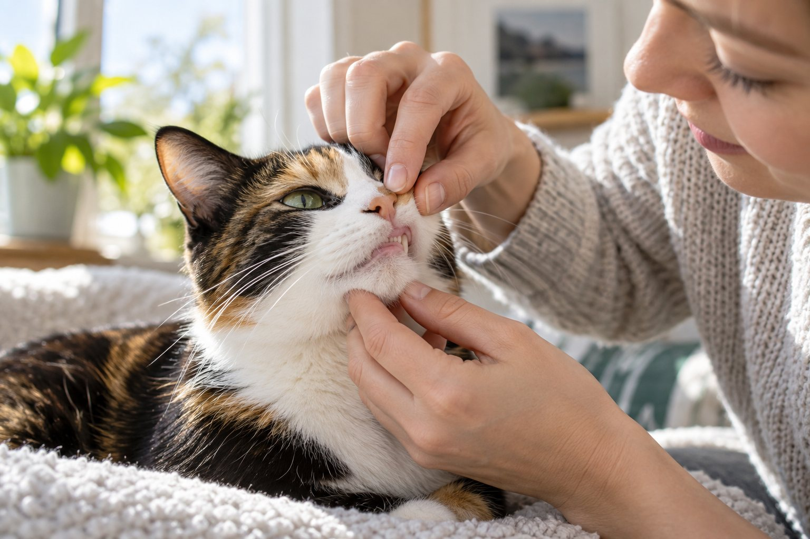

A new or persistent strong mouth odor is a reason to arrange a veterinary examination, especially with red gums, difficulty eating, drooling, or pain. Do not try to cover the smell with products alone.
“Dog breath” is often treated as a joke, but a strong or worsening odor can be useful health information. You do not need to identify the cause at home. You can notice when the smell began, whether your pet is eating normally, and whether the mouth looks uncomfortable, then share those details with a veterinarian.
Notice the pattern before reaching for a product
An occasional food smell after a meal is different from an odor that persists or gets stronger over days. Pay attention to whether it is present before meals, whether it appears suddenly, and whether other people notice it too. Compare with your pet’s usual breath rather than deciding that every dog or cat must smell the same. A short note about the timing can help the veterinary team. Avoid smelling close to a frightened animal’s mouth or restraining the head for a better sniff.
Look for changes in how your pet eats. Dropping kibble, chewing on one side, refusing hard food, pawing at the face, or slowing down at the bowl can all be worth reporting. Cats and dogs may continue to eat despite mouth pain, so normal appetite does not completely rule out a dental problem. Also watch for drooling, red gums, visible tartar, broken teeth, or swelling under an eye. A photograph of an easily visible change may help, but do not pry open a reluctant mouth.
Bad breath can have more than one cause. Dental disease is common, yet a veterinarian may also consider diet, something stuck in the mouth, or illness elsewhere based on the full examination. A particular smell cannot reliably diagnose a condition at home. Avoid online lists that assign a disease to a sweet, sour, or metallic odor without context. The useful action is to report what you noticed and when it changed.
Consider a cat whose breath becomes noticeably stronger while it still asks for food. The cat may lick gravy and leave firmer pieces behind, a change easy to miss in a shared household. Note the difference and book an examination rather than assuming it is a preference. A veterinarian can evaluate the mouth safely and decide whether other tests are needed.
Understand what a veterinary dental check can reveal
A clinician can examine visible teeth, gums, and the rest of the mouth and consider your pet’s overall health. Some problems lie below the gumline or in places a quick awake look cannot reveal. The veterinary team may recommend a professional dental assessment and cleaning, sometimes with dental imaging, depending on findings. Ask what the proposed procedure includes and why it is appropriate for your pet. Do not assume that scraping visible tartar at home or during an awake cosmetic procedure addresses disease under the gums.
Mention medications, previous dental work, changes in drinking or urination, and any history of pain. Those details may influence the assessment. If a tooth appears broken or your pet resists food, arrange care sooner. A painful mouth can make daily life difficult even when the pet seems cheerful at other times. If your pet is senior or has another illness, ask how the clinic will evaluate risk and tailor care rather than assuming treatment is impossible.
Veterinary advice may include an oral-care routine after the immediate issue has been assessed. This can involve brushing, suitable chews, or other products, but the right plan depends on the pet’s mouth and willingness to cooperate. Ask how to introduce it and what signs mean you should stop. If gums are inflamed or a tooth is painful, brushing that area before examination may make matters worse. Treatment and prevention are related but not interchangeable.
Keep expectations clear about what a dental visit can do. A professional cleaning can address current deposits and allow a more complete assessment, but future care still matters. Some pets need more frequent follow-up because of their teeth, age, or health history. Record the clinic’s recommended review interval and any products it suggests. Avoid copying a schedule from a pet with a different mouth.

Use home observations without causing pain
Choose a calm moment to look at the outside of the mouth. Lift the lip gently only if your pet allows it. You might see gum color, the visible tooth surfaces, and whether one side looks different. Do not force the jaws apart, put fingers into a painful mouth, or try to remove an object lodged between teeth. A dog or cat that pulls away, growls, or swats may be in pain. Stop and call the veterinary clinic for advice.
Write down any change in eating texture or speed. A pet who suddenly prefers soft food, chews slowly, or leaves pieces in the bowl may be giving a clue even without obvious odor. Also notice grooming changes, facial rubbing, or a reluctance to be touched near the muzzle. These signs are nonspecific, but together they help the veterinarian decide how urgently to see the pet. A brief video of eating can be useful if you can record without disturbing the animal.
Do not use human mouthwash, toothpaste, baking soda, or essential oils to mask the smell. Some ingredients are unsuitable for pets, and a pleasant scent can hide a problem that still hurts. Treats marketed for fresh breath vary in purpose and cannot replace an examination when odor is persistent. Ask your veterinarian about any dental product before relying on it, especially for a pet with a known medical condition.
If an appointment is a few days away, continue providing the diet your veterinarian recommends and avoid hard chews that seem painful. Do not give human pain medicine. Contact the clinic sooner if your pet stops eating, develops swelling, bleeds from the mouth, or appears ill. A pet who cannot comfortably eat needs timely professional help rather than a longer trial of home care.
Mouth changes to report
A veterinarian can examine the mouth.
Pain or a damaged tooth may be involved.
Ask for prompt veterinary advice.
Build prevention after the cause is addressed
Toothbrushing can be useful when introduced gradually with pet-appropriate toothpaste and a technique your veterinary team recommends. Start with allowing touch near the muzzle, then touching the outer tooth surfaces briefly, and reward calm cooperation. Some pets need many sessions before a brush is introduced. The goal is regular gentle contact, not a forced full-mouth scrub. Ask the veterinarian whether any area should be avoided after treatment and when it is safe to begin.
Products such as dental chews or diets should be considered in the context of the pet’s size, chewing style, and overall diet. A chew that fractures into large pieces or encourages frantic swallowing may not be suitable. A product that cleans teeth does not necessarily treat established disease. Ask about evidence and safety for your particular pet. Track treats as part of daily food intake if weight management is also a concern.
Make a routine you can sustain. A thirty-second calm mouth-handling practice may be more valuable than an ambitious plan that stops after two days. Pair it with a predictable daily event and stop if the pet becomes uncomfortable. For cats, voluntary cooperation can be especially important; a cat who avoids you after brushing attempts may need a different plan. Discuss alternatives with a veterinarian rather than escalating restraint.
Continue regular veterinary exams even if the breath improves. Some dental problems are not obvious at home, and a temporary change in odor does not prove that the underlying issue resolved. Ask for a written summary of findings and a practical follow-up plan. If breath becomes strong again, note how long it took and whether eating behavior changed. That history can guide the next assessment.
Know when the smell is urgent
A persistent odor without other symptoms warrants a veterinary appointment, but certain combinations call for faster action. Facial swelling, bleeding, a broken tooth, refusal to eat, marked drooling, or obvious pain should be discussed with a clinic promptly. Trouble breathing, collapse, or signs of severe illness require urgent care. Call ahead when possible so the team can advise how to transport and handle the pet safely.
Do not wait for a scheduled cleaning if your pet suddenly develops a new painful-looking swelling or cannot chew. Likewise, do not assume that the smell must be dental when it comes with major changes in thirst, appetite, or energy. A veterinarian will decide what examination and tests are appropriate. Your role is to recognize that the pattern has changed and to report it clearly.
A concise call can include four facts: when the odor started, whether it is worsening, what you can see without forcing the mouth, and whether the pet eats and behaves normally. If you have a photo or medication list, mention it. Avoid starting leftover antibiotics or pain medication; they may be inappropriate and can complicate evaluation. Do not attempt to pull a loose or broken tooth at home.
Bad breath is a signal, not a diagnosis. Once you have arranged a proper examination, you can work with your veterinary team on a sustainable oral-care routine. The practical outcome is a pet who eats comfortably and receives care for the cause of the odor, not merely breath that smells better for an afternoon.
A smell that seems to come from the mouth can sometimes be hard to localize. Check whether it is strongest near a bowl after a meal, near the ears or skin, or truly present whenever the pet breathes close to you. Do not use this as a home diagnostic test; it is simply a clearer description for the appointment. Note recent changes in food, chewing habits, or grooming products, and keep the packaging if a new product is involved.
Small dogs and cats can have significant dental problems without an obviously dramatic mouth appearance to an owner. Large tartar deposits are not the only reason to book a check. Conversely, a clean-looking front tooth does not tell you what is happening behind it or beneath the gumline. A veterinary examination is valuable precisely because it goes beyond what a brief home peek can establish.
If your pet was recently treated for dental disease and the odor returns, call the same clinic with the treatment date and any aftercare instructions. Ask whether a recheck is needed rather than adding stronger toothpaste or a new chew. The team may want to know if a medication course was completed, whether eating changed, and whether the smell returned suddenly or gradually. This history is more useful than a description such as “really bad.”
For pets with a bite risk or strong fear of mouth handling, never force a home inspection. Tell the clinic ahead of time so staff can plan a safer visit. You can still observe food choices, chewing side, and behavior from a distance. Protecting both people and pets is part of good care. A calm photograph of the pet eating may be possible, but it should not delay an appointment for obvious pain.
If the odor is accompanied by a lump under the jaw or near an eye, mention the location and whether it appeared quickly. Do not press the swelling to test it. Note if the pet resists touch on one side of the face. A clinic can decide how soon an examination is needed and whether the concern is confined to the mouth. Your observation is valuable without trying to name the condition.
Continue exploring
For a broader routine, read Why Does My Dog Scratch Even When He Doesn't Have Fleas?, Why Is My Dog Shaking? Common Reasons Explained, and How to Track Your Pet's Weight at Home.
Frequently Asked Questions
Is bad breath normal for an older dog or cat?
Age alone does not make strong persistent odor harmless. Older pets can have dental disease and other health issues, so arrange a veterinary check rather than assuming the smell is inevitable.
Can dental treats fix bad breath?
A treat may have a place in prevention, but it cannot diagnose or treat an established painful mouth problem. Ask your veterinarian whether a product suits your pet after an examination.
What if my pet still eats normally?
Pets may keep eating with mouth pain. Report persistent odor and any subtle changes such as chewing on one side, dropping food, or preferring softer textures.
Editorial references
These resources informed the general guidance in this article. They do not replace advice tailored to your pet.
This guide offers general information. Your pet’s age, health, and history may call for a different plan. For medical concerns, ask your veterinarian.